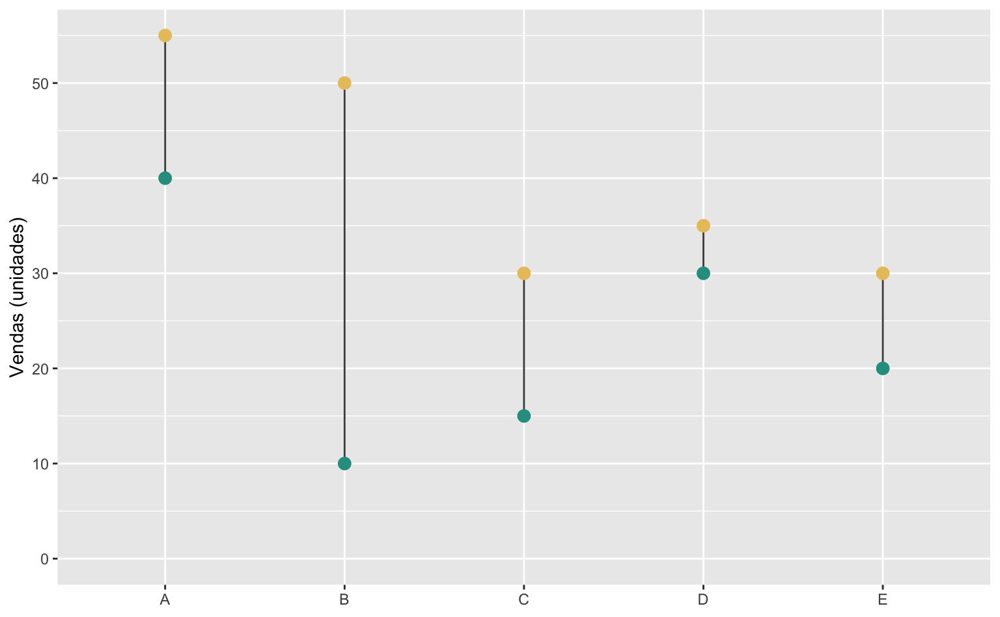
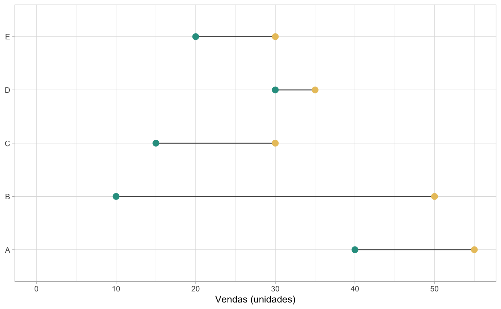
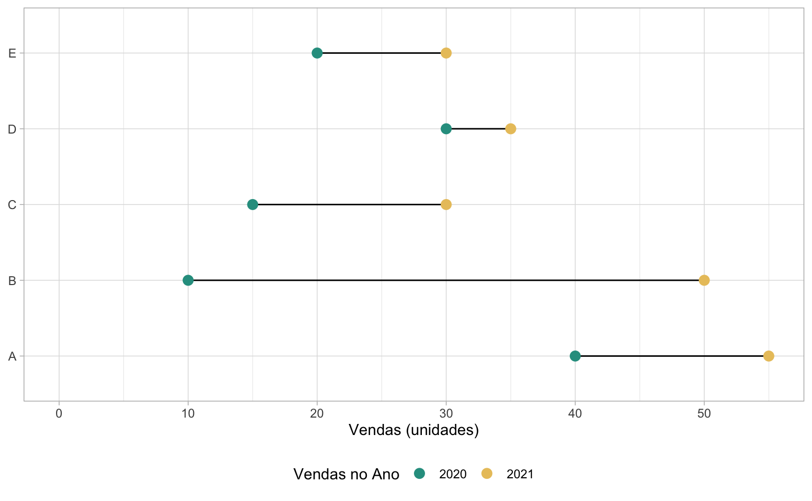

Lollipop charts
Os gráficos de lollipop (pirulito) consistem de barras (colunas) com círculos no topo, que representam os valores das observações. Visualmente, elas lembram pirulitos. Eles são utilizados tanto para substituir gráficos de coluna convencionais, como para destacar e comparar valores entre diferentes categorias ou momentos no tempo. Estes gráficos também funcionam bem para fazer rankings de valores, quando há várias categorias.
R
Antes de inicar é preciso carregar alguns pacotes. O código abaixo lista os pacotes necessários para acompanhar este post
# Instala os pacotes (se necessário)
install.packages(c("ggplot2", "tidyr", "dplyr", "forcats", "gapminder"))
# Carrega os pacotes necessários
library("ggplot2")
library("tidyr")
library("dplyr")
library("forcats")
library("gapminder")Este é o primeiro post da parte intermediária da série de Fundamentos de ggplot2. Para uma introdução aos gráficos de coluna veja o post introdutório. Além disso, alguma manipulação de dados será necessária para remodelar os dados. Não é necessário ter conhecimento sobre estas funções adicionais, mas caso queira aprender mais sobre manipulação/limpeza de dados veja o post Manipular para enxergar.
Exemplo
Primeiro vamos montar uma base de dados simulada. Vamos usar a função tibble para montar uma base de dados usando o código abaixo.
# Monta uma base de dados usando o tibble
dados <- tibble(
categoria = factor(c("A", "B", "C", "D", "E")),
vendas_2020 = c(40, 10, 15, 30, 20),
vendas_2021 = c(55, 50, 30, 35, 30)
)A função factor no código acima indica que a variável categoria deve ser tratada como uma variável categórica. Temos 5 grupos distintos (A, B, C, D e E) na coluna categoria. As colunas vendas_2020 e vendas_2021 representam o total de vendas nos anos de 2020 e 2021, respectivamente. A base de dados tem a seguinte forma.
| categoria | vendas_2020 | vendas_2021 |
|---|---|---|
| A | 40 | 55 |
| B | 10 | 50 |
| C | 15 | 30 |
| D | 30 | 35 |
| E | 20 | 30 |
Não existe uma função geom_lollipop. Para montar um lollipop vamos combinar dois geoms: o geom_segment com o geom_point. A função geom_segment() desenha segmentos de linha e exige quatro argumentos: x, xend, y e yend, que especificam onde a linha começa e onde ela termina. Já a função geom_point() exige apenas os argumentos x e y que especificam a posição dos pontos.
O código abaixo cria um gráfico de lollipop com a base de dados criada anteriormente.
# Monta o gráifco
ggplot(data = dados) +
# Desenha o a linha reta
geom_segment(aes(x = categoria, xend = categoria, y = 0, yend = vendas_2020)) +
# Desenha os pontos
geom_point(aes(x = categoria, y = vendas_2020), size = 3)Vamos destrinchar o código acima em partes.
Primeiro fazemos a chamada do ggplot para começar o gráfico. Incluímos o argumento data = dados pois ambas as figuras vão utilizar a mesma base de dados.
Por força de ser didático, deixamos todos os argumentos explícitos. Assim, a função geom_segment que desenha o segmento de reta precisa de 4 argumentos x, xend, y e yend. Como queremos uma linha reta na vertical, deixamos o valor de x igual ao de xend. O valor y = 0 especifica que a linha deve iniciar no zero (no eixo-y) e yend = vendas_2020 indica que a linha deve se estender até o valor de vendas_2020.
A função geom_point precisa apenas dos argumentos x e y que definem as coordenadas de cada ponto. Assim x = categoria indica a coordenada horizontal e y = vendas_2020 indica a coordenada vertical. O argumento size = 3 aumenta o tamanho do círculo (opcional, mas recomendado).
O resultado do gráfico é apresentado abaixo.

Vale notar que os argumentos x e y são compartilhados entre tanto o geom_segment como o geom_point de tal forma que poderíamos simplificar o código, fazendo uma pequena adaptação nos argumentos y e yend da seguinte maneira:
# Código mais sucinto
ggplot(data = dados, aes(x = categoria, xend = categoria, y = vendas_2020, yend = 0)) +
geom_segment() +
geom_point(size = 3)
Até aqui, o gráfico de lollipop parece muito similar a um gráfico de colunas, com as desvantagens de ser mais complexo e de exigir mais linhas de código. O exemplo abaixo deixa isto evidente.
# Código para gerar o lollipop chart
ggplot(data = dados, aes(x = categoria, xend = categoria, y = vendas_2020, yend = 0)) +
geom_segment() +
geom_point(size = 3)
# Código para gerar um gráfico de colunas equivalente
ggplot(data = dados, aes(x = categoria, y = vendas_2020)) +
geom_col()De fato, o gráfico de lollipop pode ser utilizado para mostrar valores, mas uma das suas principais vantanges está em poder comparar valores entre grupos. No nosso caso, temos os valores das vendas de 2020 e 2021 de cinco grupos distinos (A, B, C, D, e E). Podemos montar um gráfico que enfatiza a evolução das vendas em cada um dos grupos.
Pode-se adaptar o gráfico para ressaltar a diferença nas vendas entre os anos. Agora fica evidente, por exemplo, que as vendas aumentaram em todos os grupos entre 2020 e 2021. Além disso, o grupo B teve o maior crescimento no volume das vendas.
ggplot(data = dados, aes(x = categoria)) +
# Segmento de reta que liga os pontos
geom_segment(aes(xend = categoria, y = vendas_2020, yend = vendas_2021)) +
# Ponto (verde) que representa as vendas de 2020
geom_point(aes(y = vendas_2020), color = "#2A9D8F", size = 3) +
# Ponto (amarelo) que representa as vendas de 2021
geom_point(aes(y = vendas_2021), color = "#E9C46A", size = 3) 
Refinando o gráfico
O gráfico acima é bom, mas podemos melhorá-lo modificando alguns parâmetros estéticos. Vamos fazer estas melhorias em três etapas:
- Alterar a cor do segmento de linha
- Ajustar os eixos
- Virar o gráfico e alterar a cor do fundo
Alterar a cor do segmento de linha
Primeiro vamos mudar a cor do segmento de reta com o argumento color dentro de geom_segment(). Vamos escolher um tom mais escuro de cinza.
ggplot(data = dados, aes(x = categoria)) +
geom_segment(
aes(xend = categoria, y = vendas_2020, yend = vendas_2021),
# Ajuste a cor da linha
color = "gray30") +
geom_point(aes(y = vendas_2020), color = "#2A9D8F", size = 3) +
geom_point(aes(y = vendas_2021), color = "#E9C46A", size = 3) 
Ajustar os eixos
Depois, vamos ajustar o eixo-y, usando scale_y_continuous(), para iniciar no zero modificando o argumento limits. Este argumento aceita dois valores: o primeiro valor define o limite inferior e o segundo valor define o limite superior. Para deixar qualquer um dos limites “livre” basta defini-lo como NA. Assim limits = c(0, NA) força o eixo a começar no zero e deixa o limite superior “livre” (i.e. definido automaticamente).
Já o argumento breaks define quais os números que devem ser destacados no texto do eixo. Definimos este valor usando breaks = seq(0, 50, 10) que cria uma sequência de 0 a 50, de 10 em 10.
O eixo-y foi automaticamente nomeado como “vendas_2020” o que pode causar certa confusão. Além disso o título do eixo-x, “categoria” é um pouco redundante. Modificamos estes nomes utilizando a função labs(). Definimos y = "Vendas (unidades)" e x = NULL para omitir o título no eixo-x.
ggplot(data = dados, aes(x = categoria)) +
geom_segment(
aes(xend = categoria, y = vendas_2020, yend = vendas_2021),
color = "gray30") +
geom_point(aes(y = vendas_2020), color = "#2A9D8F", size = 3) +
geom_point(aes(y = vendas_2021), color = "#E9C46A", size = 3) +
# Ajusta o eixo-y
scale_y_continuous(
# Quebras de linha
breaks = seq(0, 50, 10),
# Limites do eixo (NA = livre): força o gráfico a começar no 0
limits = c(0, NA)) +
# Altera nome/título dos eixos
labs(
x = NULL,
y = "Vendas (unidades)")
Virar o gráfico e alterar a cor do fundo
Por fim, vamos virar o gráfico de lado usando a função coord_flip() e, em seguida, definir um tema simples com fundo branco usando theme_white(). Para mais opções de temas consulte, por exemplo, o pacote ggthemes ou veja o post da série.
O código abaixo reúne todas estas melhorias.
ggplot(data = dados, aes(x = categoria)) +
# Segmento de reta que liga os pontos
geom_segment(
aes(xend = categoria, y = vendas_2020, yend = vendas_2021),
# Ajuste a cor da linha
color = "gray30") +
# Ponto (verde) que representa as vendas de 2020
geom_point(aes(y = vendas_2020), color = "#2A9D8F", size = 3) +
# Ponto (amarelo) que representa as vendas de 2021
geom_point(aes(y = vendas_2021), color = "#E9C46A", size = 3) +
# Ajusta o eixo-y
scale_y_continuous(
# Quebras de linha
breaks = seq(0, 50, 10),
# Limites do eixo (NA = livre): força o gráfico a começar no 0
limits = c(0, NA)) +
# Altera nome/título dos eixos
labs(
x = NULL,
y = "Vendas (unidades)") +
# Inverte o gráfico (vira ele de lado)
coord_flip() +
# Tema minimalista com fundo branco
theme_light()
Quem já tem certo domínio do ggplot2 deve ter percebido que falta uma legenda no gráfico acima. De fato, da maneira como nossos dados estão estruturados, não é possível ter uma legenda de cores que explique que os círculos verdes são referentes às vendas de 2020, enquanto os círculos amarelos são referentes às vendas de 2021.
Gerar esta legenda não é tão simples e exigiria, provavelmente, dois tibble: um para representar os pontos e outro para representar a reta que liga os pontos. No código abaixo conseguimos fazer isto numa simples linha de código utilizando a função tidyr::pivot_longer.
Note que agora a chamada inicial do ggplot está vazia e especificamos o argumento data dentro de cada função geom_*. O controle da legenda de cores é feito pela função scale_color_manual().
Code
# Converte a base para o formato longitudinal
tbl_pontos <- tidyr::pivot_longer(dados, vendas_2020:vendas_2021)
ggplot() +
# Define o segmento de reta que liga os pontos
geom_segment(
data = dados,
aes(x = categoria, xend = categoria, y = vendas_2020, yend = vendas_2021)
) +
# Desenha os pontos
geom_point(
data = tbl_pontos,
aes(x = categoria, y = value, color = name),
size = 3
) +
# Controla as cores e a legenda
scale_color_manual(
# Título da legenda
name = "Vendas no Ano",
# Cores dos pontos
values = c("#2A9D8F", "#E9C46A"),
# Texto da legenda
labels = c("2020", "2021")
) +
# Ajusta o texto do eixo-y
scale_y_continuous(
breaks = seq(0, 50, 10),
limits = c(0, NA)) +
# Altera nome/título dos eixos
labs(
x = NULL,
y = "Vendas (unidades)") +
# Inverte o gráfico (vira ele de lado)
coord_flip() +
# Tema minimalista com fundo branco
theme_light() +
# Coloca a legenda na parte inferior do gráfico
theme(
legend.position = "bottom"
)
Formato dos dados
Há uma maneira de contornar a necessidade de ter duas bases de dados distintas (uma em formato wide e outra em formato long), substituindo a função geom_segment() pela função geom_line()1. A função geom_line() é tipicamente utilizada para desenhar gráficos de séries de tempo, mas também pode ser utilizada para desenhar simples linhas retas.
O código abaixo exemplifica como isto pode ser feito. Note o uso do argumento group = categoria dentro da função geom_line().
Apesar de mais simples nestre caso, a função geom_line() é menos versátil para montar gráficos de lollipop. Não é possível replicar o primeiro gráfico que fizemos, com comportamento similar a um gráfico de colunas, usando esta função, por exemplo.
ggplot(tbl_pontos, aes(x = categoria, y = value)) +
geom_line(aes(group = categoria), color = "gray30") +
geom_point(aes(color = name), size = 3) +
coord_flip()
Alterando a ordem dos elementos
Por fim, um último ponto importante é a ordem da variável categórica. No primeiro gráfico que fizemos a variável categórica foi exposta da esquerda para a direita, como seria mais natural para leitores ocidentais. Contudo, quando usamos a função coord_flip() para virar o gráfico, a variável categórica agora vai de baixo para cima o que acaba sendo confuso.
O exemplo abaixo ilustra o problema: no gráfico da direita a ordem do eixo-y começa no E e termina no A.
Code
# Gráfico na horizontal com a variável categórica da esquerda para a direita
ggplot(
data = dados,
aes(x = categoria, xend = categoria, y = vendas_2020, yend = 0)
) +
geom_segment() +
geom_point(size = 3)
# Gráfico na vertical com a variável categórica de baixo para cima
ggplot(
data = dados,
aes(x = categoria, xend = categoria, y = vendas_2020, yend = 0)
) +
geom_segment() +
geom_point(size = 3) +
coord_flip()A maneira mais segura e consistente de remediar isto é alterar a base de dados. Especificamente, deve-se interveter a ordem da variável categórica. Há muitas maneiras de fazer isso usando as funções factor() e rev(). Felizmente, o pacote forcats também tem uma função feita justamente para inverter a ordem de uma variável factor. O código abaixo utiliza justamente a função forcats::fct_rev(). Note que agora a ordem da variável categoria está de cima para baixo, de A até E.
dados <- mutate(dados, categoria = forcats::fct_rev(categoria))
# Agora a variável categórica está ordenada de cima para baixo
ggplot(
data = dados,
aes(x = categoria, xend = categoria, y = vendas_2020, yend = 0)
) +
geom_segment() +
geom_point(size = 3) +
coord_flip()Pode-se também fazer a ordem dos elementos categóricos seguir a variável numérica que se quer representar. Neste caso, usa-se a função forcats::fct_reorder.
dados <- mutate(
dados,
categoria = forcats::fct_reorder(categoria, vendas_2020)
)
# Agora a variável categórica está ordenada segundo vendas_2020
ggplot(
data = dados,
aes(x = categoria, xend = categoria, y = vendas_2020, yend = 0)
) +
geom_segment() +
geom_point(size = 3) +
coord_flip()Expectativa de vida
Agora vamos fazer um exemplo aplicado usando dados da base gapminder. A Gapminder é uma fundação de pesquisa independente que compila dados sobre importantes fatos globais. Caso não tenha carregado ainda, use o código abaixo para carregar o pacote necessário.
A tabela que vamos utilizar compila dados de expectativa de vida (lifeExp), população (pop) e de PIB per capita (gdpPercap) ao longo do período 1952-2007 para quase todos os países do mundo. Os dados estão armazenados no tibble chamado gapminder.
data("gapminder")
gapminder| country | continent | year | lifeExp | pop | gdpPercap |
|---|---|---|---|---|---|
| Afghanistan | Asia | 1952 | 29 | 8425333 | 779 |
| Afghanistan | Asia | 1957 | 30 | 9240934 | 821 |
| Afghanistan | Asia | 1962 | 32 | 10267083 | 853 |
| Afghanistan | Asia | 1967 | 34 | 11537966 | 836 |
| Afghanistan | Asia | 1972 | 36 | 13079460 | 740 |
| Afghanistan | Asia | 1977 | 38 | 14880372 | 786 |
Expectativa de vida nas Américas
Vamos montar um gráfico de lollipop que mostra a evolução da expectativa de vida nos países americanos no maior horizonte de tempo possível. Primeiro, temos de preparar os dados para nossa visualização.
Como os dados já estão no formato longitudinal, vamos utilizar esta base para plotar os pontos do gráfico. O código abaixo usa a função filter para encontrar apenas as linhas referentes a países do continente americano (inclui América do Sul, Central e do Norte) no primeiro e o último ano disponível.
Depois, o código inverte a ordem alfabética dos países usando forcats::fct_rev() dentro da função mutate. Isto é útil pois quando a função coord_flip() “vira” o gráfico, a ordem da variável categórica acaba ficando invertida (como nos gráficos que fizemos acima).
americas <- gapminder |>
filter(
continent == "Americas",
year == min(year) | year == max(year)) |>
mutate(country = forcats::fct_rev(country))Para converter os dados no formato necessário da função geom_segment usamos a função pivot_wider(). Os argumentos podem parecer confusos à primeira vista. Essencialmente, estamos indicando que cada linha deve ser um país, que as colunas devem representar os valores dos anos (1952 e 2007) e que os valores destas colunas estão em lifeExp. Vale consultar ?pivot_wider.
americas_wide <- tidyr::pivot_wider(
americas,
# Cada linha é um país
id_cols = "country",
# As novas colunas devem representar os anos de 1952 e 2007
names_from = "year",
# Os valores destas novas colunas estão na coluna lifeExp
values_from = "lifeExp",
# Concatena o stringr 'life_exp_' no nome das novas colunas
names_prefix = "life_exp_"
)O código completo para o gráfico segue abaixo.
Code
ggplot() +
geom_segment(
data = americas_wide,
aes(x = country, xend = country, y = life_exp_1952, yend = life_exp_2007),
color = "gray30") +
geom_point(
data = americas,
aes(x = country, y = lifeExp, color = as.factor(year)),
size = 2) +
scale_color_brewer(name = "", type = "qual", palette = 6) +
labs(
title = "Aumento da Expectativa de Vida",
subtitle = "Expectativa de vida ao nascer em 1952 e em 2007 nos países americanos.",
caption = "Fonte: Gapminder.",
x = NULL,
y = "Expectativa de vida (Anos)") +
coord_flip() +
theme_light() +
theme(
legend.position = "top",
panel.grid.minor = element_blank()
)Expectativa de vida em relação à média
Pode-se também montar um gráfico que compara a expectativa de vida nos países em relação à média mundial. O código abaixo pega as observações do ano mais recente e calcula o desvio em relação à média de cada país. Para tornar a visualização mais limpa, seleciona-se um subconjunto de 20 países.
gap07 <- gapminder |>
filter(year == max(year)) |>
mutate(
diff = lifeExp - mean(lifeExp),
country = fct_reorder(country, diff)
)
country_sel <- c(
"Swaziland", "Rwanda", "Botswana", "Kenya", "Haiti", "India", "Brazil",
"Turkey", "Mexico", "United States", "Austria", "France", "Japan", "Taiwan",
"Argentina", "Sri Lanka", "Egypt", "Iraq", "Nigeria", "Afghanistan"
)
sub07 <- filter(gap07, country %in% country_sel)No gráfico abaixo, além de incluir uma linha vertical para sinalizar a média mundial com geom_hline, também coloco uma pequena nota de texto para destacar que a expectativa de vida média mundial era de 67 anos2.
Code
dftext <- tibble(
x = "Kenya",
y = 8,
label = "67 anos de vida\né expectativa de\nvida média do mundo."
)
ggplot(data = sub07) +
geom_segment(
aes(x = country, xend = country, y = diff, yend = 0),
color = "gray30"
) +
geom_point(
aes(x = country, y = diff, color = continent),
size = 3
) +
geom_hline(yintercept = 0) +
geom_text(
data = dftext,
aes(x = x, y = y, label = label),
size = 3
) +
scale_y_continuous(limits = c(-28, 28)) +
scale_color_manual(
name = "Continente",
values = c("#264653", "#e9c46a", "#2a9d8f", "#e76f51")
) +
labs(
title = "Expectativa de Vida",
subtitle = "Expectativa de vida em 2007 nos países selecionados em relação à média mundial.",
caption = "Fonte: Gapminder.",
x = NULL,
y = "Expectativa de vida (Dif. em rel. a média)") +
coord_flip() +
theme_light() +
theme(
legend.position = "top",
panel.grid.minor = element_blank(),
panel.grid.major.y = element_blank()
)
Expectativa de vida por continente
Por fim, podemos montar um lollipop similar a um gráfico de colunas. Para torná-lo mais interessante, vamos fazer um lollipop, onde o valor numérico é plotado no meio círculo.
O código abaixo calcula a média ponderada da expectativa de vida por continente. Além disso, ordena-se o nome dos continentes e cria-se uma variável chamada label, que arredonda o resultado do cálculo. Este valor será plotado no meio do círculo.
tab_continent <- gap07 |>
group_by(continent) |>
summarise(avg = weighted.mean(lifeExp, pop)) |>
mutate(
continent = fct_reorder(continent, avg),
label = format(round(avg, 1), decimal.mark = ",")
)O gráfico combina geom_point, geom_segment e geom_text.
ggplot(tab_continent, aes(x = continent, y = avg, color = continent)) +
geom_point(size = 15) +
geom_segment(aes(xend = continent, yend = 0), linewidth = 2) +
geom_text(aes(label = label), color = "white", fontface = "bold") +
guides(color = "none")A versão finalizada do gráfico remove elementos temáticos desnecessários para deixar o gráfico mais minimalista. Além disso, uso o coord_flip não apenas para virar o gráfico, mas também para dar um “zoom-in”. Note que o gráfico claramente não começa no zero, o que ajuda a enfatizar a diferença entre os grupos. Apesar de ser um conselho comum que se deve sempre iniciar o eixo-y no zero, há casos em que isto não faz muito sentido.
Code
ggplot(tab_continent, aes(x = continent, y = avg, color = continent)) +
geom_point(size = 15) +
geom_segment(aes(xend = continent, yend = 0), linewidth = 2) +
geom_text(aes(label = label), color = "white", fontface = "bold") +
coord_flip(ylim = c(50, NA), expand = TRUE) +
scale_color_brewer(type = "qual", palette = 2) +
guides(color = "none") +
labs(
x = NULL,
y = NULL,
title = "Expectativa de vida média por continente",
subtitle = "Média ponderada da expectativa de vida por continente (2007).",
caption = "Fonte: Gapminder"
) +
theme_minimal() +
theme(
panel.grid = element_blank(),
axis.text.x = element_blank(),
axis.text.y = element_text(
color = "#000000",
size = 12,
hjust = 0.5,
vjust = 0.5
)
)Imóveis
Para os próximos exemplos vamos voltar novamente à base txhousing para visualizar a queda na venda de imóveis após a grande crise imobiliária no mercado dos EUA.
Antes e depois da Crise
Para esta visualização, primeiro, vamos selecionar um subconjunto de cidades a ser comparadas em 2006 e 2010. O código abaixo agrega as vendas mensais, ano a ano, em oito cidades do Texas em 2006 e 2010.
sel_cities <- c(
"Houston", "Dallas", "Denton County", "Austin","San Antonio",
"Collin County", "Fort Worth", "Fort Bend"
)
#> Seleciona um subconjunto de cidades e soma as vendas a cada ano
sub <- txhousing |>
filter(city %in% sel_cities, year %in% c(2006, 2010)) |>
group_by(city, year) |>
summarise(year_sales = sum(sales))Para definir a ordem das cidades no gráfico ordeno as cidades por número de vendas, em 2006, em ordem ascendente (da menor para a maior).
# Pega o nome das cidades ordenadas por vendas em 2006
lvls <- sub |>
filter(year == 2006) |>
arrange(year_sales) |>
pull(city)
sub <- mutate(sub, city = factor(city, levels = lvls))O gráfico abaixo mostra a queda na venda de imóveis nestas cidades entre os anos de 2006 a 2010. No caso de Houston, a queda foi de mais de 20 mil unidades. Note que a diferença no porte das cidades acaba dificultando a comparação da queda nas vendas nas regiões menores como Fort Bend e Denton County.
Code
ggplot(sub, aes(x = city, y = year_sales)) +
geom_line(aes(group = city), color = "gray30") +
geom_point(aes(color = as.factor(year)), size = 3) +
scale_x_discrete(labels = function(x) stringr::str_wrap(x, width = 8)) +
scale_y_continuous(
breaks = seq(0, 80000, 10000),
labels = scales::label_number(big.mark = "."),
limits = c(0, NA)
) +
scale_color_manual(
name = "Ano",
values = c("#2A9D8F", "#E9C46A"),
labels = c("2006", "2010")
) +
coord_flip() +
labs(
title = "Queda na venda de imóveis nos principais mercados",
x = NULL,
y = "Vendas") +
theme_light() +
theme(
legend.position = "bottom",
axis.text.y = element_text(hjust = 0.5),
panel.grid.major.y = element_blank(),
panel.grid.minor = element_blank()
)Histórico de vendas nas cidades pequenas
Gráficos de lollipop também podem ser utilizados para mostrar a variância num conjunto de dados entre diferentes grupos. Podemos, por exemplo, mostrar o número mínimo, máximo e médio de vendas nas cidades ao longo do período da amostra (2000 a 2015).
O código abaixo encontra os valores de venda máximo, mínimo e médio em cada uma das cidades. Além disso, também encontro em qual ano que os valores máximo e mínimo ocorreram. Note que se exclui o ano de 2015, pois as observações neste ano não estão completas.
Code
tab_summary_sales <- txhousing |>
#> Remove 2015
filter(year < 2015) |>
#> Total de vendas anuais por cidade
group_by(city, year) |>
summarise(total = sum(sales)) |>
#> Máximos, mínimos e média por cidade
group_by(city) |>
summarise(
sales_max = max(total),
sales_min = min(total),
sales_avg = mean(total),
year_max = year[which.max(total)],
year_min = year[which.min(total)]
)Para melhorar a visualização, escolho somente as cidades pequenas, que registraram número médio de vendas entre 1000 e 5000 unidades.
Code
#> Converte os dados para long e remove valores ausentes
tab_sales <- tab_summary_sales |>
pivot_longer(-city, names_to = "stat") |>
filter(!is.na(value))
#> Pega o nome das cidades com número médio de vendas entre 1000 e 5000
#> ordenadas pelo número de vendas
small_cities <- tab_sales |>
filter(stat == "sales_avg", value > 1000, value < 5000) |>
arrange(value) |>
pull(city) |>
unique()
#> Filtra a tabela para conter apenas cidades pequenas
tab_small_sales <- tab_sales |>
filter(city %in% small_cities) |>
mutate(city = factor(city, levels = small_cities))Separo os valores com os números de vendas num tibble e os valores com os anos num outro tibble. O primeiro conjunto de dados será utilizado para plotar os pontos e a linha (o lollipop), enquanto o segundo será utilizado para plotar os labels de texto (com os números).
Code
#> Número de vendas (pontos e linha)
sub_sales <- tab_small_sales |>
filter(stringr::str_detect(stat, "sales")) |>
mutate(stat = factor(stat, levels = c("sales_min", "sales_avg", "sales_max")))
#> Anos recordes (texto)
sub_years <- tab_small_sales |>
filter(stringr::str_detect(stat, "max|min")) |>
pivot_wider(
id_cols = "city",
names_from = "stat",
names_sep = "_",
values_from = "value"
)O resultado final é bastante interessante. Em muitas cidades, o menor valor de vendas foi registrado em 2000 e o maior, em 2013 ou 2014. Nestes casos, como em Irving e San Angelo, parece que houve uma tendência geral de crescimento nas vendas.
Já em Amarillo e Killeen-Fort Hood o pico de vendas ocorreu antes da Crise em 2005/2006, indicando que estas regiões não voltaram a registrar vendas no mesmo patamar ao pré-crise. No caso da segunda região, o número médio histórico de vendas está bem abaixo do pico, cerca de 50%.
Wichita Falls e Corpus Christi também apresentam pico em 2006, mas seus piores anos foram em 2011, sugerindo que o período pós-crise foi particularmente severo nestas regiões.
Code
ggplot(sub_sales, aes(x = city, y = value)) +
geom_line(aes(group = city)) +
geom_point(aes(color = stat), size = 3) +
geom_text(
data = sub_years,
aes(x = city, y = sales_min - 200, label = year_min),
size = 3
) +
geom_text(
data = sub_years,
aes(x = city, y = sales_max + 200, label = year_max),
size = 3
) +
scale_x_discrete(labels = function(x) stringr::str_wrap(x, width = 8)) +
scale_y_continuous(
breaks = seq(0, 5500, 500),
labels = scales::label_number(big.mark = "."),
limits = c(0, NA)
) +
scale_color_manual(
name = "",
values = c("#e9c46a", "#f4a261", "#e76f51"),
labels = c("Mínimo", "Média", "Máximo")
) +
labs(
x = NULL,
y = "Vendas",
title = "Variação de vendas (2000-2014)",
subtitle = "Número mínimo, máximo e médio de vendas anuais. Números indicam quais foram os anos de recordes."
) +
coord_flip() +
theme_light() +
theme(
legend.position = "bottom",
axis.text.y = element_text(hjust = 0.5),
panel.grid.major.y = element_blank(),
panel.grid.minor = element_blank()
)Resumindo
Os gráficos de lollipop são uma forma atraente de comparar valores ou proporções entre diferentes categorias. Eles consistem em um gráfico de barras horizontais com pontos representando os valores plotados no topo, que lembram pirulitos. Há várias maneiras de montar estes gráficos usando ggplot2 mas a mais completa é combinando o geom_segment com o geom_point.
Abaixo resumimos alguns dos pontos positivos destes gráficos.
Pontos positivos:
- Visualmente atraente: os gráficos de lollipop são uma forma elegante de exibir seus dados em relatórios e apresentações.
- Comparação de valores entre grupos: permitem facilmente comparar, visualmente, a diferença entre grupos e dentro de um mesmo grupo.
- Ocupam pouco espaço: são visualmente compactos e transmitem um grande quantidade de informação.
Em resumo, os gráficos de lollipop são uma opção atraente e eficiente para comparar valores ou proporções entre categorias, mas podem não ser a melhor opção para comparar dados categóricos ou com muitas categorias.
Outros posts citados
Footnotes
Evidentemente, as funções
geom_pathegeom_steptambém funcionariam no lugar degeom_line.↩︎Para mais sobre como usar
geom_texte outras maneiras de usar elementos textuais no gráfico consulte Estético: Destancado informação.↩︎